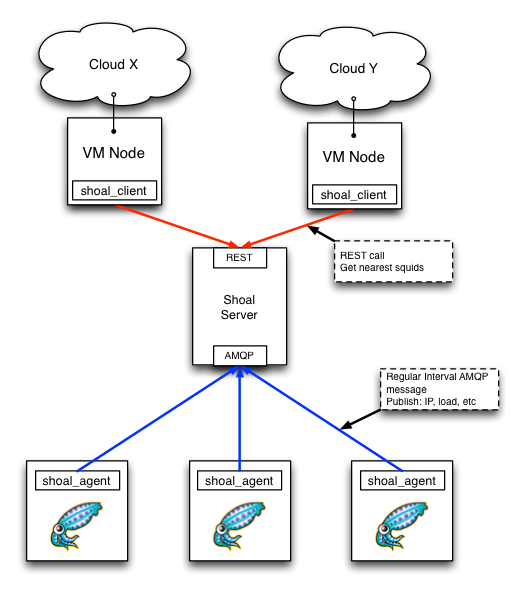

A squid cache publishing and advertising tool designed to work in fast changing environments
A squid cache publishing and advertising tool designed to work in fast changing environments.
The purpose of shoal is to allow you to build a continually updated list of squid caches. Each squid runs shoal-agent which uses AMQP messages to publish the existence and load of the squid to the central shoal-server. Shoal-server keeps a list of squids in memory and removes any squid which has not sent it a message recently. The IPs of all squid servers are geo-referenced. Clients contact the squid server using a REST interface to retrieve an ordered list of the nearest squids. The diagram below should give you some idea how this works:

shoal-server maintains the list of running squids. It uses RabbitMQ to handle incoming AMQP messages from squid servers. It provides a REST interface for programatically retrieving a json formatted ordered list of squids. It also provides a web interface for viewing the list.
shoal-agent runs on squid servers and publishes the load and IP of the squid server to the shoal-server using a json formatted AMQP message at regular intervals. This agent is designed to be trivially installed in a few seconds with python's pip tool.
shoal-client is a reference client that can be used to contact the REST interface of the shoal-server
All the components can be installed independently. Refer to the individual component READMEs for install instructions:
For people familiar with it, everything is available from PyPI.
This program is free software; you can redistribute it and/or modify it under the terms of either:
a) the GNU General Public License as published by the Free Software Foundation; either version 3, or (at your option) any later version, or
b) the Apache v2 License.
This program is distributed in the hope that it will be useful, but WITHOUT ANY WARRANTY; without even the implied warranty of MERCHANTABILITY or FITNESS FOR A PARTICULAR PURPOSE. See either the GNU General Public License or the Apache v2 License for more details.
You should have received a copy of the Apache v2 License with this software, in the file named "LICENSE".
You should also have received a copy of the GNU General Public License along with this program in the file named "COPYING". If not, write to the Free Software Foundation, Inc., 51 Franklin Street, Fifth Floor, Boston, MA 02110-1301, USA or visit their web page on the internet at http://www.gnu.org/copyleft/gpl.html.
In this section we will report our results for the Improvement of Shoal project. We specifically detail on the test results from our conversion from the current Web.py framework to Tornado and our UI results from the web interface improvements.
Our testing procedure included three main components: Isolated component unit tests, performance profiling, and integration tests.
The following graphs below outline our results from our tests:
The existing user interface for the current Shoal implementation was improved to display the data in a more meaningful way and help provide a better user experience. Data visualization was noted as a key lacking component. It was thus agreed upon that the new page be enhanced to meet this criteria using D3 (Data Driven Documents), a JavaScript library and Ajax, a web development technique.
The following screenshot below shows the results of our UI modifications: